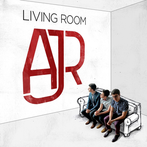

Albums:
Living Room
February 27, 2015
- Overture
- Infinity
- I'm Ready
- My Calling
- Thirsty
- Pitchfork Kids
- Woody Allen
- Livin' on Love
- Big White Bed
- The World Is a Marble Heart
- The Green and the Town
- Bigg Idea
- Growing Old on Bleecker Street

The Click
June 9, 2017
- Overture
- The Good Part
- Weak
- Sober Up
- Drama
- Turning Out
- No Grass Today
- Three-Thirty
- Call My Dad
- I'm Not Famous
- Netflix Trip
- Bud Like You
- Come Hang Out

Neotheater
April 26, 2019
- Next Up Forever
- Birthday Party
- 100 Bad Days
- Don't Throw Out My Legos
- Break My Face
- Turning Out Pt.ii
- The Entertainment's Here
- Karma
- Beats
- Wow, I'm Not Crazy
- Dear Winter
- Finale
Ok Orchestra
March 26, 2021
- Ok Overture
- Bummerland
- 3 O'Clock Things
- My Play
- Joe
- Adventure Is Out There
- Bang!
- The Trick
- Ordinaryish People
- Humpty Dumpty
- World's Smallest Violin
- Way Less Sad
- Chirstmas in June